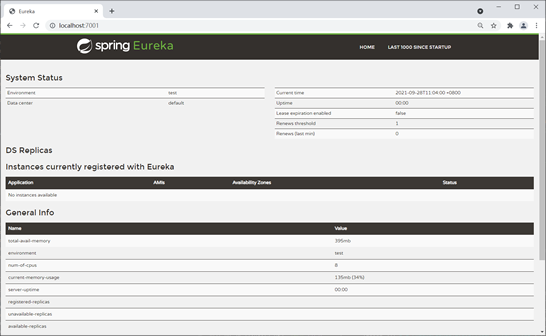

3.1 What does Eureka do
Now that we’ve decided to split big app into multiple microservices. Instead of calling method from different classes, we are nowing calling services from different microservices via http calling. This require us to remember a lot of address, and the corresponding services behind it.
With Eureka, we can register each microservices into Eureka. When calling services, we can fetch service from Eureka instead of fetching http address from our memory. In this way, we don’t have to memorize a lot address and service. And also the micorservices are not depending on each other. All microservices depend on Eureka.
3.2 Three types of roles in Eureka
Eureka adopts CS (Client/Server, client/server) pattern. Eureka Server is also known as Discover Server(The word Eureka comes from the ancient Greek word meaning "discovered”.) There can either be one server or a bunch of servers. Single server will work in standalone mode, multiple servers will work in cluster mode. As for Eureka client, it refers to the microservices. There are two types of Eureka Client(microservice): Provider and Consumer. Provider provide services, willing to expose the services, and will register its service to Discover Server. Consumer doesn't provide any Services but it consumes the service. It will fetch the service registered in Discover Server and perform an http call to call the service. Consumer doesn’t need to register itself to Discover Server.
There are also some microservices, they provide and consume service at the same time. That means he is provider and consumer at the same time. This kind of microserver should also register itself in Discover Server.
There are also some microservices, they don’t provide any service, nor consume any service. Usually these are some common modules which may be useful for all micorservice, for example, entity classes.
Thus there are three types of roles in Eureka: Discover Server(Eureka Server), Provider(Eureka Client), Consumer(Eureka Client).
3.3 Important Config in Eureka
For each microservice, we can config it as consumer or provider in application.yml
There are two configuration options. register-with-eureka and fetch-registry
Set register-with-eureka to true means register current microservice to Discover Server.
Set register-with-eureka to false means don't register current microservice to Discover Server.Usually, consumer and Eureka server itself don’t need to register in the Discover Server. By default, this option is true.
set fetch-registry to true means current microservice is fetching services from Discover Server
set fetch-registry to false means current microservice doesn’t need to fetch any services from Discover Server
Typically, a consumer should set register-with-eureka to false, set fetch-registry to true
a provider should either set both to true or at least set register-with-eureka to true
Discover itself should set both to false.
3.4 Set up Eureka in Spring Cloud
Since this case involves multiple microservices created by Spring Boot, for the convenience of management, here we use Maven's multi-module structure (that is, a project contains multiple modules) to build the project.
(1) Create the main project(Maven Project)
Create a Maven main project named DataEngineSwarm, and then use dependencyManagement in the pom.xml of the main project to manage the version of Spring Cloud, as follows:
<?xml version="1.0" encoding="UTF-8"?>
xmlns="http://maven.apache.org/POM/4.0.0"
xmlns:xsi="http://www.w3.org/2001/XMLSchema-instance"
xsi:schemaLocation="http://maven.apache.org/POM/4.0.0 http://maven.apache.org/xsd/maven-4.0.0.xsd"
4.0.0
pom
micro-service-cloud-api
org.springframework.boot
spring-boot-starter-parent
2.3.6.RELEASE
<!-- lookup parent from repository -->
com.luxbp
DataEngineSwarm
0.0.1-SNAPSHOT
8
8
UTF-8
1.8
1.8
4.12
1.2.17
1.16.18
<!--Use dependencyManagement to declare the version of Spring Cloud in the main project,
so that when Spring Cloud component dependencies are introduced into the Module in the project,
there is no need to declare the version information of the components. Ensure the consistency of each component of Spring Cloud-->
org.springframework.cloud
spring-cloud-dependencies
Hoxton.SR12
pom
import
microservicecloud
src/main/resources
true
org.apache.maven.plugins
maven-resources-plugin
$
(2) Create a common submodule(Maven Module)
Under the main project, create a Maven Module named
micro-service-cloud-api: micro-service-cloud-api, and its pom.xml configuration
is as follows.
<?xml version="1.0" encoding="UTF-8"?>
xmlns="http://maven.apache.org/POM/4.0.0"
xmlns:xsi="http://www.w3.org/2001/XMLSchema-instance"
xsi:schemaLocation="http://maven.apache.org/POM/4.0.0 http://maven.apache.org/xsd/maven-4.0.0.xsd"
com.luxbp
DataEngineSwarm
0.0.1-SNAPSHOT
4.0.0
micro-service-cloud-api
8
8
org.projectlombok
lombok
Note: micro-service-cloud-api is a common submodule of the entire project, which contains some common content of other submodules, such as entity classes, public tool classes, public dependencies, etc. When other submodules need to use the content in the common submodule, they only need to introduce the common submodule as dependencies in their pom.xml.
Under the com.luxbp.entity package of micro-service-cloud-api, create an entity class named Dept, the code is as follows.
package com.luxbp.entity;
import lombok.Data;
import lombok.NoArgsConstructor;
import lombok.experimental.Accessors;
import java.io.Serializable;
@NoArgsConstructor //no-argument constructor
@Data // Provide get, set, equals, hashCode, canEqual, toString methods of the class
@Accessors(chain = true)
public class Dept implements Serializable {
private Integer deptNo;
private String deptName;
private String dbSource;
}
(3) Set-up Service Discover Center (Discover Server)
Create a Spring Boot Module named micro-service-cloud-eureka-7001 under the main project as the service registry, and introduce the following dependencies in its pom.xml.
<?xml version="1.0" encoding="UTF-8"?>
xmlns="http://maven.apache.org/POM/4.0.0"
xmlns:xsi="http://www.w3.org/2001/XMLSchema-instance"
xsi:schemaLocation="http://maven.apache.org/POM/4.0.0 http://maven.apache.org/xsd/maven-4.0.0.xsd"
4.0.0
com.luxbp
DataEngineSwarm
0.0.1-SNAPSHOT
com.luxbp
micro-service-cloud-eureka-7001
0.0.1-SNAPSHOT
micro-service-cloud-eureka-7001
Demo project for Spring Boot
1.8
org.springframework.boot
spring-boot-starter-web
<!--import the dependency of Eureka Server for the service registry-->
org.springframework.cloud
spring-cloud-starter-netflix-eureka-server
<!--Both devtools and lombok are development auxiliary modules, which should be selected according to the needs-->
org.springframework.boot
spring-boot-devtools
runtime
true
org.projectlombok
lombok
true
org.springframework.boot
spring-boot-starter-test
test
org.springframework.boot
spring-boot-maven-plugin
org.projectlombok
lombok
Under the classpath of micro-service-cloud-eureka-7001 (/resouces directory), add a configuration file application.yml, the configuration content is as follows.
:
: 7001 # port number of this Module
:
:
: localhost # instance name of eureka server
:
: false #false means doesn't register myself
: false #false mean I don't need to search for service bc I'm the discover center, I'm the one to maintain service instance
:
: http://${eureka.instance.hostname}:${server.port}/eureka/ # discover server in single mode
Use the @EnableEurekaServer annotation on the main startup class of micro-service-cloud-eureka-7001 to enable the service registry function and accept the registration of other services. The code is as follows.
package com.luxbp;
import org.springframework.boot.SpringApplication;
import org.springframework.boot.autoconfigure.SpringBootApplication;
import org.springframework.cloud.netflix.eureka.server.EnableEurekaServer;
@SpringBootApplication
@EnableEurekaServer //start Eureka server,accept registering from other micro services
public class MicroServiceCloudEureka7001Application {
public static void main(String[] args) {
SpringApplication.run(MicroServiceCloudEureka7001Application.class, args);
}
}
Start micro-service-cloud-eureka-7001, use a browser to visit the homepage of the Eureka service registration center, the address is "http://localhost:7001/", the result is as shown below.

(3) Set-up Service provider (Eureka Client)
Create a Spring Boot Module named micro-service-cloud-provider-dept-8001 under the main project, and introduce the following dependencies in its pom.xml.
<?xml version="1.0" encoding="UTF-8"?>
xmlns="http://maven.apache.org/POM/4.0.0" xmlns:xsi="http://www.w3.org/2001/XMLSchema-instance"
xsi:schemaLocation="http://maven.apache.org/POM/4.0.0 https://maven.apache.org/xsd/maven-4.0.0.xsd"
4.0.0
<!--Import the parent project pom-->
com.luxbp
DataEngineSwarm
0.0.1-SNAPSHOT
com.luxbp
micro-service-cloud-provider-dept-8001
0.0.1-SNAPSHOT
micro-service-cloud-provider-dept-8001
Demo project for Spring Boot
1.8
<!--Spring Boot Web-->
org.springframework.boot
spring-boot-starter-web
<!--devtools development tools-->
org.springframework.boot
spring-boot-devtools
runtime
true
<!--Spring Boot test-->
org.springframework.boot
spring-boot-starter-test
test
<!--Import public submodules-->
com.luxbp
micro-service-cloud-api
0.0.1-SNAPSHOT
<!--junit test-->
junit
junit
4.12
<!--mysql driver-->
mysql
mysql-connector-java
5.1.49
<!--logback log-->
ch.qos.logback
logback-core
<!--Integrate mybatis-->
org.mybatis.spring.boot
mybatis-spring-boot-starter
2.2.0
<!-- Effective immediately after modification, hot deployment-->
org.springframework
springloaded
1.2.8.RELEASE
<!--Introduce the dependency of Eureka Client and register the service with Eureka Server-->
org.springframework.cloud
spring-cloud-starter-netflix-eureka-client
<!-- Spring Boot monitoring module-->
org.springframework.boot
spring-boot-starter-actuator
<!--Mybatis automatically generates code plugin-->
org.mybatis.generator
mybatis-generator-maven-plugin
1.4.0
src/main/resources/mybatis-generator/generatorConfig.xml
true
<!-- Whether to overwrite, true means that the generated JAVA file will be replaced, false is not overwritten-->
true
<!--mysql driver package-->
mysql
mysql-connector-java
5.1.49
org.mybatis.generator
mybatis-generator-core
1.4.0
org.springframework.boot
spring-boot-maven-plugin
Under the micro-service-cloud-provider-dept-8001 class path (/resources directory), add the configuration file application.yml, the configuration content is as follows.
:
: 8001 #Service port number
:
:
: microServiceCloudProviderDept #The name of the microservice, the name of the microservice exposed to the outside world, is very important
################################################## JDBC config ##########################################
:
: root
: root
: jdbc:mysql://127.0.0.1:3306/luxbp_demo_jdbc #database url
: com.mysql.jdbc.Driver #database driver
############################### do not check spring.config.import=configserver: ##################
# cloud:
# config:
# enabled: false
###################################### MyBatis config ######################################
:
# Specify the location of mapper.xml
: classpath:mybatis/mapper/*.xml
#The location of the scanned entity class, specify the package of the scanned entity class here, and the full path name of the entity class can not be written in mapper.xml
: com.luxbp.entity
:
#The camel case is enabled by default, you don’t need to set this property
: true
########################################### Spring cloud custom service name and ip address / Spring cloud 自定义服务名称和 ip 地址###############################################
:
: #Register the client into the eureka service list
:
: http://localhost:7001/eureka #This address is the registration address exposed by the 7001 registration center in application.yml (stand-alone version)
:
: spring-cloud-provider-8001 #Custom service name information
: true #Display the ip address of the access path
########################################## Spring cloud uses Spring Boot actuator to monitor and improve information###################################
# Spring Boot 2.50 shields most of the nodes for actuator monitoring, and only exposes the heath node. The configuration (*) in this section is to enable all nodes
:
:
:
:
: "*" # * is a keyword in the yaml file, so quotation marks are required
:
: micro-service-cloud-provider-dept
: luxbp.com
: @project.artifactId@
: @project.version@
Create an interface named DeptMapper under the com.luxbp.mapper package, the code is as follows.
package com.luxbp.mapper;
import com.luxbp.entity.Dept;
import org.apache.ibatis.annotations.Mapper;
import java.util.List;
@Mapper
public interface DeptMapper {
//get data by key
Dept selectByPrimaryKey(Integer deptNo);
//get all data
List<Dept> GetAll();
}
In the resources/mybatis/mapper/ directory, create a MyBatis mapping file named DeptMapper.xml, the configuration content is as follows.
<?xml version="1.0" encoding="UTF-8"?>
<!DOCTYPE mapper PUBLIC "-//mybatis.org//DTD Mapper 3.0//EN" "http://mybatis.org/dtd/mybatis-3-mapper.dtd">
namespace="com.luxbp.mapper.DeptMapper"
id="BaseResultMap" type="com.luxbp.entity.Dept"
column="dept_no" jdbcType="INTEGER" property="deptNo"
column="dept_name" jdbcType="VARCHAR" property="deptName"
column="db_source" jdbcType="VARCHAR" property="dbSource"
id="Base_Column_List"
dept_no
, dept_name, db_source
id="selectByPrimaryKey" parameterType="java.lang.Integer" resultMap="BaseResultMap"
select
refid="Base_Column_List"
from dept
where dept_no = #{deptNo,jdbcType=INTEGER}
id="GetAll" resultType="com.luxbp.entity.Dept"
select *
from dept;
Create an interface named DeptService under the com.luxbp.service package, the code is as follows.
package com.luxbp.service;
import com.luxbp.entity.Dept;
import java.util.List;
public interface DeptService {
Dept get(Integer deptNo);
List<Dept> selectAll();
}
Create the implementation class DeptServiceImpl of the DeptService interface under the com.luxbp.service.impl package, the code is as follows.
package com.luxbp.service.impl;
import com.luxbp.entity.Dept;
import com.luxbp.mapper.DeptMapper;
import com.luxbp.service.DeptService;
import org.springframework.beans.factory.annotation.Autowired;
import org.springframework.stereotype.Service;
import java.util.List;
@Service("deptService")
public class DeptServiceImpl implements DeptService {
@Autowired
private DeptMapper deptMapper;
@Override
public Dept get(Integer deptNo) {
return deptMapper.selectByPrimaryKey(deptNo);
}
@Override
public List<Dept> selectAll() {
return deptMapper.GetAll();
}
}
Create a Controller class named DeptController under the com.luxbp.controller package, the code is as follows.
package com.luxbp.controller;
import lombok.extern.slf4j.Slf4j;
import com.luxbp.entity.Dept;
import com.luxbp.service.DeptService;
import org.springframework.beans.factory.annotation.Autowired;
import org.springframework.beans.factory.annotation.Value;
import org.springframework.web.bind.annotation.*;
import java.util.List;
/**
* Service Provider Control Layer
* author:
*/
@RestController
@Slf4j
public class DeptController {
@Autowired
private DeptService deptService;
@Value("${server.port}")
private String serverPort;
@RequestMapping(value = "/dept/get/{id}", method = RequestMethod.GET)
public Dept get(@PathVariable("id") int id) {
return deptService.get(id);
}
@RequestMapping(value = "/dept/list", method = RequestMethod.GET)
public List<Dept> list() {
return deptService.selectAll();
}
}
On the main startup class of micro-service-cloud-provider-dept-8001, use the @EnableEurekaClient annotation to enable the Eureka client function, and register the service to the service registry (Eureka Server). The code is as follows.
package com.luxbp;
import org.springframework.boot.SpringApplication;
import org.springframework.boot.autoconfigure.SpringBootApplication;
import org.springframework.cloud.netflix.eureka.EnableEurekaClient;
@SpringBootApplication
@EnableEurekaClient // Spring cloud Eureka client, automatically registers this service in the Eureka Server registry
public class MicroServiceCloudProviderDept8001Application {
public static void main(String[] args) {
SpringApplication.run(MicroServiceCloudProviderDept8001Application.class, args);
}
}
Start micro-service-cloud-eureka-7001 and micro-service-cloud-provider-dept-8001 in sequence, and use a browser to visit the homepage of the Eureka service registration center (http://localhost:7001/), as shown in the figure below.
As can be seen from the Figure, the Instances currently registered with Eureka (instances registered with Eureka Server) option already contains a piece of service information, that is, a service has already been registered with Eureka Server.
The Instances currently registered with Eureka option includes the following:
Application: MICROSERVICECLOUDPROVIDERDEPT, the value is the value of spring.application.name in the micro-service-cloud-provider-dept-8001 configuration file application.yml.
Status: UP (1) - spring-cloud-provider-8001, UP means the service is online, (1) means the number of services in the cluster, spring-cloud-provider-8001 is micro-service-cloud-provider-dept- 8001 The value of eureka.instance.instance-id in the configuration file application.yml.
NOTE: We are visiting the service via the url of localhost:7001. That is to say we are not communicate with eureka, but communicate directly with 8001, via the url defined in 8001’s controller. But actually we should Communicate with Eureka, and let Eureka fetch the corresponding service instesad of us: We can visit: http://eureka7001.com/dept/get/1 instead of localhost. In next article, we will go on discussing this.
Execute the following SQL in the luxbp_demo_jdbc database of MySQL to prepare test data.
DROP TABLE IF EXISTS `dept`;
CREATE TABLE `dept` (
`dept_no` int NOT NULL AUTO_INCREMENT,
`dept_name` varchar(255) DEFAULT NULL,
`db_source` varchar(255) DEFAULT NULL,
PRIMARY KEY (`dept_no`)
) ENGINE=InnoDB AUTO_INCREMENT=6 DEFAULT CHARSET=utf8mb4 COLLATE=utf8mb4_0900_ai_ci;
INSERT INTO `dept` (`dept_no`, `dept_name`, `db_source`) VALUES
(1, 'dev dept', 'bianchengbang_jdbc'),
(2, 'hr dept', 'bianchengbang_jdbc'),
(3, 'finance dept', 'bianchengbang_jdbc'),
(4, 'marketing dept', 'bianchengbang_jdbc'),
(5, 'admin dept', 'bianchengbang_jdbc');
Use a browser to access "http://localhost:8001/dept/list", the result is as shown below